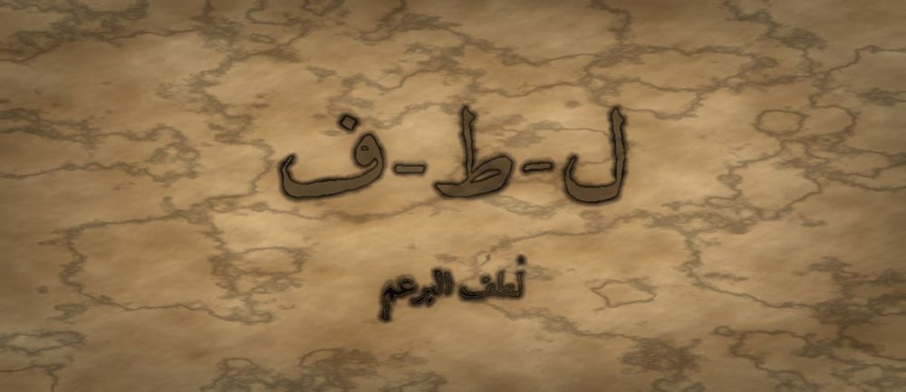

مَطبعةُ جُذور · دبي · MCMXXVI · سِلْسِلَةُ فَنِّ البَيان

مَرحلةُ البُرْعُم · الفئة ٧–٩ · الجذر ل-ط-ف · ابن المبارك
❦ ✦ ❧
السِّفْرُ ٦ — لُطفُ البرعم
«اللُّطْفُ لَيْسَ ضَعْفًا — بَلْ قُوَّةٌ تَعْرِفُ كَيْفَ تَمُرُّ دُونَ أَنْ تَجْرَحَ»

الرِّسَالَةُ الجَوْهَرِيَّة
بَعْدَ أَنْ تَعَلَّمَ الطِّفْلُ أَنْ يُنْصِتَ وَأَنْ يَسْأَلَ، يَتَعَلَّمُ الْآنَ كَيْفَ يَقُولُ. فَالْكَلِمَةُ الْوَاحِدَةُ قَدْ تُدْفِئُ وَقَدْ تَخْدِشُ، وَالْفَرْقُ بَيْنَهُمَا لَيْسَ فِي الْمَعْنَى بَلْ فِي اللُّطْفِ. اللُّطْفُ نُعُومَةٌ فِي الصَّوْتِ، وَاخْتِيَارٌ وَاعٍ لِلَّفْظِ، وَاحْتِرَامٌ لِقَلْبِ مَنْ يَسْمَعُ. وَهُوَ لَا يُنْقِصُ الصِّدْقَ شَيْئًا، بَلْ يَجْعَلُهُ مَقْبُولًا.
بِطَاقَةُ هُوِيَّةِ السِّفْر
| الْمُسْتَوَى / الدَّرَجَة | بُرْعُمٌ يَلِينُ — الدَّرَجَةُ الثَّالِثَةُ فِي مَرْحَلَةِ الْبُرْعُمِ |
| الْفِئَةُ الْعُمْرِيَّة | ٧–٩ سَنَوَاتٍ · نِطَاقُ تَدَاخُلٍ يَمْتَدُّ إِلَى ١٠ لِلْمُتَعَلِّمِ الْمُتَأَنِّي |
| الْجَذْرُ الْأَسَاسِيّ | ل – ط – ف · اللُّطْفُ: الْقُوَّةُ حِينَ تَخْتَارُ أَنْ تَكُونَ نَاعِمَةً |
| أُسْرَةُ الْجَذْر | لُطْف · لَطِيف · لَطَّفَ · مُلَاطَفَة · تَلَطُّف · أَلْطَاف |
| الْمَحَطَّة | اللُّطْفُ — أَوَّلُ اخْتِبَارٍ لِأَثَرِ الْكَلَامِ فِي الْآخَرِ |
| الْمِرْسَاةُ الْحِسِّيَّة | تَمْرِيرُ الْكَفِّ عَلَى قُمَاشَةٍ نَاعِمَةٍ ثُمَّ عَلَى وَرَقٍ خَشِنٍ لِتَمْيِيزِ أَثَرِ الْمَلْمَسِ |
| الِاسْتِعَارَة | الْبُرْعُمُ الَّذِي تَعَلَّمَ السُّؤَالَ، يَكْتَشِفُ أَنَّ لِلْكَلِمَةِ مَلْمَسًا كَمَلْمَسِ الْأَوْرَاقِ |
| الشَّخْصِيَّتَانِ الْحَكِيمَتَان | عَبْدُ اللهِ بْنُ الْمُبَارَكِ (إِمَامُ الْأَدَبِ وَالسَّخَاءِ) + الْجَدَّةُ رَمْلَة |
| الشَّخْصِيَّةُ الرَّمْزِيَّة | نُورُ الْبُرْعُمِ (نَفْسُهَا مِنَ الْأَسْفَارِ السَّابِقَةِ — تَنْمُو) |
| الشَّخْصِيَّةُ الْمُضَادَّة | الرِّيحُ الْخَشِنَةُ — رَمْزِيَّةٌ لَا تَارِيخِيَّةٌ، تُمَثِّلُ الْكَلَامَ الصَّادِقَ الْجَارِحَ، وَتَتَعَلَّمُ النُّعُومَةَ |
| مُؤَشِّرُ الرَّصْدِ الْوَصْفِيّ | يُلَاحَظُ أَنَّهُ يُعِيدُ صِيَاغَةَ جُمْلَةٍ قَاسِيَةٍ بِصِيغَةٍ أَلْيَنَ دُونَ أَنْ يُغَيِّرَ مَعْنَاهَا |
| الْمَجَالُ الْمَهَارِيّ | الْوَعْيُ الِاجْتِمَاعِيُّ — أَثَرُ الْكَلَامِ فِي الْآخَرِ |
| الْمَرْجِعُ النَّظَرِيّ | اسْتِرْشَادًا بِـ TRT — نَظَرِيَّةِ الْقِرَاءَةِ الْمَلْمُوسَةِ (لَا ادِّعَاءَ اعْتِمَادٍ) |
صَاحِبُ السِّفْرِ مِنَ التُّرَاث
عَبْدُ اللهِ بْنُ الْمُبَارَكِ الْمَرْوَزِيُّ (ت ١٨١هـ) عَالِمٌ وَمُحَدِّثٌ وَتَاجِرٌ مِنْ خُرَاسَانَ، اشْتُهِرَ بِالْجَمْعِ بَيْنَ الْعِلْمِ وَالْجُودِ وَحُسْنِ الْخُلُقِ، وَلَهُ كِتَابٌ فِي الزُّهْدِ وَالرَّقَائِقِ. عُرِفَ بِرِفْقِهِ فِي مُخَاطَبَةِ مُخَالِفِيهِ وَبِإِنْفَاقِهِ الْخَفِيِّ عَلَى طَلَبَةِ الْعِلْمِ. نَسْتَلْهِمُ مِنْهُ هُنَا: أَنَّ الرِّفْقَ فِي الْقَوْلِ صَنْعَةٌ تُتَعَلَّمُ لَا طَبْعٌ يُورَثُ.
الشَّخْصِيَّةُ المُضَادَّة — الرِّيحُ الْخَشِنَةُ — شَخْصِيَّةٌ رَمْزِيَّةٌ لَا تَارِيخِيَّةٌ، تَهُبُّ فَتَقُولُ الْحَقِيقَةَ كُلَّهَا دَفْعَةً وَاحِدَةً فَتَكْسِرُ الْبَرَاعِمَ. تَظُنُّ أَنَّ الصِّدْقَ يُعْفِيهَا مِنَ الرِّفْقِ، ثُمَّ تَتَعَلَّمُ فِي النِّهَايَةِ أَنْ تُبْطِئَ وَتَمُرَّ نَسِيمًا يَحْمِلُ الْمَعْنَى دُونَ أَنْ يَجْرَحَ.
الجَذْرُ وَأُسْرَتُه
ل-ط-ف — لُطْف · لَطِيف · لَطَّفَ · مُلَاطَفَة · تَلَطُّف · أَلْطَاف
الْجَذْرُ (ل-ط-ف) صَحِيحٌ سَالِمٌ، وَمَصْدَرُهُ الثُّلَاثِيُّ «لُطْف» بِضَمِّ اللَّامِ، وَمِنْهُ الصِّفَةُ الْمُشَبَّهَةُ «لَطِيف» عَلَى وَزْنِ فَعِيل. وَالتَّضْعِيفُ فِي «لَطَّفَ» يُفِيدُ التَّعْدِيَةَ وَالْمُعَالَجَةَ (جَعَلَهُ لَطِيفًا)، وَ«تَلَطُّف» عَلَى وَزْنِ تَفَعُّل يُفِيدُ التَّكَلُّفَ الْمَحْمُودَ: أَنْ يَحْمِلَ الْمَرْءُ نَفْسَهُ عَلَى اللِّينِ حَتَّى يَصِيرَ طَبْعًا.
القِصَّةُ الكَامِلَة
الْمَشْهَدُ ١ — كَلِمَةٌ صَغِيرَةٌ تَتْرُكُ أَثَرًا كَبِيرًا
كَانَتْ نُورُ قَدْ صَارَتْ بُرْعُمًا صَغِيرًا عَلَى طَرَفِ الْغُصْنِ. تَعَلَّمَتْ أَنْ تُنْصِتَ، وَتَعَلَّمَتْ أَنْ تَسْأَلَ، فَصَارَ لَهَا أَصْدِقَاءُ كَثِيرُونَ فِي الْحَدِيقَةِ. وَفِي صَبَاحٍ نَدِيٍّ، رَأَتْ بُرْعُمًا صَغِيرًا بِجَانِبِهَا مَائِلًا قَلِيلًا نَحْوَ الْأَرْضِ. أَرَادَتْ أَنْ تُسَاعِدَهُ، فَقَالَتْ بِسُرْعَةٍ: «أَنْتَ مُعْوَجٌّ! لِمَاذَا أَنْتَ مُعْوَجٌّ هَكَذَا؟» كَانَتْ صَادِقَةً تَمَامًا — فَقَدْ كَانَ مَائِلًا فِعْلًا. لَكِنَّ الْبُرْعُمَ الصَّغِيرَ أَغْلَقَ وَرَقَتَهُ وَلَمْ يُجِبْ. وَقَفَتْ نُورُ حَائِرَةً وَقَالَتْ فِي نَفْسِهَا: «قُلْتُ الْحَقِيقَةَ... فَلِمَاذَا صَارَ حَزِينًا؟ وَلِمَاذَا أَشْعُرُ أَنَا أَيْضًا بِثِقَلٍ فِي صَدْرِي؟» كَانَ ذَلِكَ أَوَّلَ سُؤَالٍ لَا تَعْرِفُ لَهُ جَوَابًا. وَمَرَّتْ سَحَابَةٌ صَغِيرَةٌ فَوْقَهَا فَلَمْ تُمْطِرْ، كَأَنَّهَا هِيَ الْأُخْرَى تَنْتَظِرُ جَوَابًا. ظَلَّتْ نُورُ تُعِيدُ كَلِمَتَهَا فِي رَأْسِهَا مَرَّةً بَعْدَ مَرَّةٍ، وَتُقَلِّبُهَا كَمَا تُقَلَّبُ حَصَاةٌ فِي الْكَفِّ، وَتَسْأَلُ: «هَلْ يُمْكِنُ أَنْ يَكُونَ الْكَلَامُ صَحِيحًا وَخَطَأً فِي وَقْتٍ وَاحِدٍ؟» وَلَمْ تَنَمْ تِلْكَ اللَّيْلَةَ إِلَّا وَالسُّؤَالُ مَعَهَا.
الْمَشْهَدُ ٢ — الرِّيحُ الْخَشِنَةُ تَهُبُّ وَتَفْتَخِرُ بِصَرَاحَتِهَا
وَفِي الظُّهْرِ هَبَّتِ الرِّيحُ الْخَشِنَةُ عَلَى الْحَدِيقَةِ. مَرَّتْ عَلَى الْأَغْصَانِ فَحَنَّتْهَا، وَعَلَى الْأَوْرَاقِ فَمَزَّقَتْ أَطْرَافَهَا، وَهِيَ تَقُولُ: «أَنَا لَا أُجَامِلُ أَحَدًا! أَقُولُ الْحَقَّ كَمَا هُوَ! هَذِهِ الْوَرَقَةُ صَفْرَاءُ، وَهَذَا الْغُصْنُ ضَعِيفٌ، وَهَذِهِ الزَّهْرَةُ مُتَأَخِّرَةٌ! مَنْ لَا يَحْتَمِلُ الصِّدْقَ فَلْيَذْهَبْ!» ثُمَّ الْتَفَتَتْ إِلَى نُورَ وَقَالَتْ: «أَحْسَنْتِ يَا صَغِيرَةُ! قُولِي لَهُمْ عُيُوبَهُمْ كَمَا فَعَلْتِ! الرِّفْقُ ضَعْفٌ، وَالْكَلَامُ النَّاعِمُ كَذِبٌ!» تَرَدَّدَتْ نُورُ. نَظَرَتْ حَوْلَهَا فَرَأَتِ الْحَدِيقَةَ بَعْدَ مُرُورِ الرِّيحِ: كُلُّ شَيْءٍ صَحِيحٌ، وَكُلُّ شَيْءٍ مَكْسُورٌ. وَقَالَتْ هَامِسَةً: «إِذَا كَانَ الصِّدْقُ يَكْسِرُ... فَهَلْ يُوجَدُ طَرِيقٌ آخَرُ؟» وَتَذَكَّرَتْ نُورُ كَيْفَ أَغْلَقَ صَاحِبُهَا وَرَقَتَهُ فِي الصَّبَاحِ، فَعَرَفَتْ أَنَّ لِلرِّيحِ وَلَهَا شَيْئًا مُشْتَرَكًا لَا تُحِبُّهُ. وَلَمَّا هَدَأَتِ الرِّيحُ قَلِيلًا، سَمِعَتْ صَوْتَ وَرَقَةٍ مَكْسُورَةٍ تَقُولُ: «كُنْتُ أَعْرِفُ أَنِّي صَفْرَاءُ... لَكِنِّي كُنْتُ أُرِيدُ أَنْ أَسْمَعَ ذَلِكَ مِنْ صَدِيقٍ لَا مِنْ عَاصِفَةٍ.»
الْمَشْهَدُ ٣ — ابْنُ الْمُبَارَكِ وَالْجَدَّةُ رَمْلَةُ وَحِكَايَةُ الْقُمَاشَتَيْنِ
جَلَسَتِ الْجَدَّةُ رَمْلَةُ تَحْتَ الشَّجَرَةِ، وَمَعَهَا رَجُلٌ هَادِئُ النَّظَرِ يُقَالُ لَهُ عَبْدُ اللهِ بْنُ الْمُبَارَكِ، كَانَ يَجْمَعُ الْعِلْمَ كَمَا يَجْمَعُ النَّاسُ الْمَاءَ فِي الصَّيْفِ. أَخْرَجَتِ الْجَدَّةُ قِطْعَتَيْنِ: قُمَاشَةً نَاعِمَةً، وَوَرَقَةً خَشِنَةً، وَقَالَتْ: «مَرِّرِي كَفَّكِ عَلَى هَذِهِ، ثُمَّ عَلَى هَذِهِ.» فَعَلَتْ نُورُ، ثُمَّ قَالَتْ: «الْأُولَى تُرِيحُ كَفِّي، وَالثَّانِيَةُ تَخْدِشُهَا!» فَقَالَ ابْنُ الْمُبَارَكِ: «وَكَذَلِكَ الْكَلَامُ يَا نُورُ. لِلْكَلِمَةِ مَلْمَسٌ كَمَا لِلْقُمَاشِ. وَالْمَعْنَى الْوَاحِدُ يُمْكِنُ أَنْ يَخْرُجَ نَاعِمًا أَوْ خَشِنًا، وَأَنْتِ تَخْتَارِينَ.» قَالَتْ نُورُ: «وَكَيْفَ أَخْتَارُ؟» قَالَ: «قَبْلَ أَنْ تَتَكَلَّمِي، اسْأَلِي نَفْسَكِ سُؤَالًا وَاحِدًا: هَلْ أُرِيدُ أَنْ أُصْلِحَ، أَمْ أُرِيدُ أَنْ أَنْتَصِرَ؟» ثُمَّ أَضَافَ ابْنُ الْمُبَارَكِ: «وَاعْلَمِي أَنَّ اللِّينَ لَيْسَ إِخْفَاءً لِلْحَقِّ، بَلْ حَمْلٌ لَهُ حَتَّى يَصِلَ سَالِمًا. وَمَنْ رَمَى الْحَقَّ رَمْيًا كَسَرَهُ وَكَسَرَ مَنْ رَمَاهُ إِلَيْهِ.» أَمْسَكَتْ نُورُ الْقُمَاشَةَ النَّاعِمَةَ بِكَفِّهَا وَقَالَتْ: «إِذَنْ سَأَخْتَارُ.»
الْمَشْهَدُ ٤ — نُورُ تَتَعَلَّمُ صِنَاعَةَ الْجُمْلَةِ اللَّطِيفَةِ
قَالَتِ الْجَدَّةُ رَمْلَةُ: «هَيَّا نُجَرِّبْ. قُولِي مَا قُلْتِهِ لِلْبُرْعُمِ.» قَالَتْ نُورُ خَجِلَةً: «قُلْتُ لَهُ: أَنْتَ مُعْوَجٌّ.» قَالَتِ الْجَدَّةُ: «الْمَعْنَى صَحِيحٌ. لَكِنْ ضَعِي فِيهِ ثَلَاثَةَ أَشْيَاءَ: اسْمَهُ، وَنِيَّتَكِ الطَّيِّبَةَ، وَبَابًا مَفْتُوحًا.» فَكَّرَتْ نُورُ طَوِيلًا، ثُمَّ قَالَتْ بِبُطْءٍ: «يَا صَدِيقِي، أَرَاكَ مَائِلًا نَحْوَ الْأَرْضِ، وَأَظُنُّ أَنَّ الشَّمْسَ بَعِيدَةٌ عَنْكَ. هَلْ تُحِبُّ أَنْ نَبْحَثَ مَعًا عَنْ مَكَانٍ أَقْرَبَ لِلضَّوْءِ؟» ابْتَسَمَ ابْنُ الْمُبَارَكِ وَقَالَ: «هَذَا هُوَ اللُّطْفُ. لَمْ تَحْذِفِي الْحَقِيقَةَ، بَلْ حَمَلْتِهَا عَلَى كَفٍّ نَاعِمَةٍ.» شَعَرَتْ نُورُ بِشَيْءٍ يَتَّسِعُ فِي صَدْرِهَا، كَأَنَّ وَرَقَةً جَدِيدَةً انْفَتَحَتْ فِيهَا. وَقَالَتِ الْجَدَّةُ: «وَاحْفَظِي هَذَا: مَا نَقُولُهُ لِلنَّاسِ نَسْمَعُهُ نَحْنُ أَوَّلًا، فَاخْتَارِي كَلَامًا تُحِبِّينَ أَنْ يَبْقَى فِي أُذُنَيْكِ.» أَعَادَتْ نُورُ جُمْلَتَهَا مَرَّةً أُخْرَى، فَوَجَدَتْهَا هَذِهِ الْمَرَّةَ تَخْرُجُ أَخَفَّ عَلَى لِسَانِهَا وَأَدْفَأَ فِي صَدْرِهَا.
الْمَشْهَدُ ٥ — الْبُرْعُمُ الْمَائِلُ يَفْتَحُ وَرَقَتَهُ
عَادَتْ نُورُ إِلَى الْبُرْعُمِ الصَّغِيرِ الَّذِي أَغْلَقَ وَرَقَتَهُ فِي الصَّبَاحِ. وَقَفَتْ أَمَامَهُ، وَأَخَذَتْ وَقْتَهَا، ثُمَّ قَالَتْ بِصَوْتٍ هَادِئٍ: «صَبَاحُ الْخَيْرِ. أَنَا آسِفَةٌ؛ قُلْتُ لَكَ كَلَامًا صَحِيحًا بِطَرِيقَةٍ خَشِنَةٍ. أَرَدْتُ أَنْ أَقُولَ إِنَّنِي أَرَاكَ، وَأُحِبُّ أَنْ أُسَاعِدَكَ.» سَكَتَ الْبُرْعُمُ لَحْظَةً... ثُمَّ فَتَحَ وَرَقَتَهُ بِبُطْءٍ حَتَّى ظَهَرَ لَوْنُهُ الْأَخْضَرُ الصَّغِيرُ، وَقَالَ: «كُنْتُ أَعْرِفُ أَنَّنِي مَائِلٌ. لَكِنَّنِي كُنْتُ أَحْتَاجُ أَنْ أَعْرِفَ أَنَّ أَحَدًا يُرِيدُ لِي الْخَيْرَ.» ضَحِكَا مَعًا. وَتَعَلَّمَتْ نُورُ يَوْمَئِذٍ أَنَّ الْكَلِمَةَ اللَّطِيفَةَ لَا تُغَيِّرُ الْحَقِيقَةَ، لَكِنَّهَا تَفْتَحُ الْبَابَ الَّذِي تَدْخُلُ مِنْهُ. وَجَلَسَا مَعًا حَتَّى مَالَتِ الشَّمْسُ، يَبْحَثَانِ عَنْ مَوْضِعٍ يَصِلُهُ الضَّوْءُ، حَتَّى وَجَدَا فُرْجَةً صَغِيرَةً بَيْنَ وَرَقَتَيْنِ. وَقَالَ الْبُرْعُمُ وَهُوَ يَتَنَفَّسُ: «لَمْ يَتَغَيَّرْ مَيْلِي بَعْدُ، لَكِنَّ شَيْئًا فِيَّ اسْتَقَامَ.»
الْمَشْهَدُ ٦ — الرِّيحُ الْخَشِنَةُ تَتَعَلَّمُ أَنْ تُبْطِئَ
كَانَتِ الرِّيحُ الْخَشِنَةُ تُرَاقِبُ مِنْ بَعِيدٍ. رَأَتِ الْبُرْعُمَ يَفْتَحُ وَرَقَتَهُ لِنُورَ، وَتَذَكَّرَتْ أَنَّهَا هِيَ مَرَّتْ عَلَى الْحَدِيقَةِ مِائَةَ مَرَّةٍ فَلَمْ يَفْتَحْ لَهَا أَحَدٌ شَيْئًا. اقْتَرَبَتْ بِحَذَرٍ وَقَالَتْ: «أَنَا أَقُولُ الْحَقَّ مِثْلَكِ... فَلِمَاذَا يَهْرُبُونَ مِنِّي وَيَقْتَرِبُونَ مِنْكِ؟» قَالَتْ نُورُ بِرِفْقٍ: «لِأَنَّكِ تَمُرِّينَ مُسْرِعَةً. الْحَقُّ يَحْتَاجُ وَقْتًا لِيَدْخُلَ.» فَكَّرَتِ الرِّيحُ، ثُمَّ جَرَّبَتْ لِأَوَّلِ مَرَّةٍ أَنْ تُبْطِئَ. مَرَّتْ عَلَى الْوَرَقِ فَاهْتَزَّ وَلَمْ يَنْكَسِرْ، وَسَمِعَتْ صَوْتًا لَمْ تَسْمَعْهُ مِنْ قَبْلُ: صَوْتَ الْأَوْرَاقِ وَهِيَ تُصَفِّقُ لَهَا. وَقَالَتْ: «مَا أَجْمَلَ أَنْ أَمُرَّ دُونَ أَنْ أَكْسِرَ. سَأَتَعَلَّمُ أَنْ أَكُونَ نَسِيمًا.» وَمَنْ يَوْمِهَا صَارَتِ الرِّيحُ تَمُرُّ عَلَى الْحَدِيقَةِ مَرَّتَيْنِ: مَرَّةً تُخْبِرُ، وَمَرَّةً تَنْتَظِرُ. وَكَانَتْ نُورُ تَقُولُ لِأَصْدِقَائِهَا: «انْظُرُوا، حَتَّى الرِّيحُ تَعَلَّمَتْ. فَاللُّطْفُ لَيْسَ طَبْعًا نُولَدُ بِهِ، بَلْ مَهَارَةٌ نَتَدَرَّبُ عَلَيْهَا كُلَّ يَوْمٍ.»
النُّسْخَةُ المُخْتَصَرَة
قَالَتْ نُورُ لِبُرْعُمٍ صَغِيرٍ: «أَنْتَ مُعْوَجٌّ!» فَأَغْلَقَ وَرَقَتَهُ وَحَزِنَ. كَانَ كَلَامُهَا صَحِيحًا، لَكِنَّهُ خَشِنٌ. مَرَّتِ الرِّيحُ الْخَشِنَةُ وَقَالَتْ: «أَحْسَنْتِ! الرِّفْقُ ضَعْفٌ!» فَنَظَرَتْ نُورُ إِلَى الْحَدِيقَةِ الْمَكْسُورَةِ وَحَارَتْ. أَعْطَتْهَا الْجَدَّةُ رَمْلَةُ قُمَاشَةً نَاعِمَةً وَوَرَقَةً خَشِنَةً وَقَالَتْ: «مَرِّرِي كَفَّكِ.» فَقَالَتْ نُورُ: «هَذِهِ تُرِيحُ، وَهَذِهِ تَخْدِشُ.» قَالَ ابْنُ الْمُبَارَكِ: «وَلِلْكَلَامِ مَلْمَسٌ كَذَلِكَ.» فَعَادَتْ نُورُ إِلَى صَدِيقِهَا وَقَالَتْ: «أَرَاكَ مَائِلًا، هَلْ نَبْحَثُ مَعًا عَنِ الضَّوْءِ؟» فَفَتَحَ وَرَقَتَهُ وَابْتَسَمَ. وَرَأَتِ الرِّيحُ ذَلِكَ، فَجَرَّبَتْ أَنْ تُبْطِئَ، فَاهْتَزَّ الْوَرَقُ وَلَمْ يَنْكَسِرْ. وَتَعَلَّمَتِ الرِّيحُ أَنَّ الْقَوِيَّ حَقًّا هُوَ مَنْ يَمُرُّ دُونَ أَنْ يَجْرَحَ. وَبَقِيَ الدَّرْسُ فِي الْحَدِيقَةِ: الْحَقِيقَةُ لَا تَتَغَيَّرُ، لَكِنَّ طَرِيقَهَا إِلَى الْقَلْبِ يَتَغَيَّرُ. فَقُلْ مَا تُرِيدُ، وَاخْتَرْ لَهُ مَلْمَسًا نَاعِمًا، فَإِنَّ الْكَلِمَةَ اللَّطِيفَةَ تَفْتَحُ بَابًا لَا يَفْتَحُهُ الصُّرَاخُ. وَصَارَتْ نُورُ كُلَّمَا أَرَادَتْ أَنْ تَتَكَلَّمَ سَأَلَتْ نَفْسَهَا سُؤَالًا وَاحِدًا: «هَلْ أُرِيدُ أَنْ أُصْلِحَ، أَمْ أُرِيدُ أَنْ أَنْتَصِرَ؟»
المِرْسَاةُ الحِسِّيَّة
يُمَرِّرُ الطِّفْلُ كَفَّهُ بِنَفْسِهِ عَلَى قِطْعَةِ قُمَاشٍ نَاعِمَةٍ وَهُوَ يَقُولُ جُمْلَتَهُ اللَّطِيفَةَ، ثُمَّ عَلَى وَرَقٍ خَشِنٍ وَهُوَ يَقُولُ الْجُمْلَةَ الْقَاسِيَةَ. يُغْمِضُ عَيْنَيْهِ إِنْ أَحَبَّ، وَيَنْتَبِهُ إِلَى كَفِّهِ: أَيُّهُمَا يُرِيحُ؟ ثُمَّ يَضَعُ كَفَّهُ عَلَى صَدْرِهِ وَيَسْأَلُ نَفْسَهُ: «أَيُّ الْجُمْلَتَيْنِ أُحِبُّ أَنْ أَسْمَعَهَا أَنَا؟» كُلُّ حَرَكَةٍ يُؤَدِّيهَا الطِّفْلُ بِنَفْسِهِ.
العَنَاصِرُ الخَمْسَةُ لِلتَّطْبِيق
| الْمُخْرَجُ اللُّغَوِيّ | يَقُولُ الطِّفْلُ: «أَرَاكَ... وَأَنَا مَعَكَ» بَدَلًا مِنْ «أَنْتَ...» — يُبْدِلُ جُمْلَةَ الِاتِّهَامِ بِجُمْلَةِ الْمُشَارَكَةِ، وَيُدَرَّبُ عَلَيْهَا فِي ثَلَاثَةِ مَوَاقِفَ يَوْمِيَّةٍ. |
| الْحَرَكَةُ الْجَسَدِيَّة | يُمَرِّرُ الطِّفْلُ كَفَّهُ بِنَفْسِهِ عَلَى قُمَاشَةٍ نَاعِمَةٍ ثُمَّ عَلَى وَرَقٍ خَشِنٍ وَهُوَ يَنْطِقُ الْجُمْلَتَيْنِ، لِيَرْبِطَ الْمَلْمَسَ بِأَثَرِ الْكَلِمَةِ. لَا يَلْمِسُ الْمُرَافِقُ يَدَ الطِّفْلِ. |
| الدِّفْءُ الْعِلَائِقِيّ | يَخْتَارُ الطِّفْلُ شَخْصًا وَاحِدًا وَيَقُولُ لَهُ جُمْلَةً لَطِيفَةً صَادِقَةً وَاحِدَةً فِي الْيَوْمِ، ثُمَّ يُلَاحِظُ مَاذَا تَغَيَّرَ فِي وَجْهِ مَنْ سَمِعَهَا. |
| الْبَدِيلُ الْحِسِّيّ | لِمَنْ لَا يُرِيدُ الْكَلَامَ: يَرْسُمُ الْجُمْلَةَ الْخَشِنَةَ بِخُطُوطٍ مُتَعَرِّجَةٍ وَالْجُمْلَةَ اللَّطِيفَةَ بِخُطُوطٍ مُنْحَنِيَةٍ، فَيَرَى الْفَرْقَ بِعَيْنِهِ دُونَ صَوْتٍ. |
| الْجِسْرُ الْإِنْجِلِيزِيّ | «Gentle words open closed doors.» — تُقَالُ بَعْدَ الْجُمْلَةِ الْعَرَبِيَّةِ لِيَتَوَازَنَ اللِّسَانَانِ عَلَى الْمَعْنَى نَفْسِهِ. |
دَلِيلُ الأَهْلِ وَالمُعَلِّم
| قبل الجلسة | ضَعُوا الْأَجْهِزَةَ فِي صُنْدُوقٍ مُغْلَقٍ، وَجَهِّزُوا قِطْعَتَيْنِ: قُمَاشَةً نَاعِمَةً وَوَرَقًا خَشِنًا. ثُمَّ تَذَكَّرُوا مَعًا كَلِمَةً لَطِيفَةً سَمِعَهَا أَحَدُكُمُ الْيَوْمَ وَكَيْفَ شَعَرَ بِهَا. |
| أثناء الجلسة | لَا تُصَحِّحُوا صِيَاغَةَ الطِّفْلِ فَوْرًا؛ اسْأَلُوهُ: «كَيْفَ سَتَشْعُرُ لَوْ قِيلَتْ لَكَ؟» وَاتْرُكُوا لَهُ وَقْتَ التَّفْكِيرِ. احْتَفُوا بِالْمُحَاوَلَةِ لَا بِالْإِتْقَانِ. |
| بعد الجلسة | اجْعَلُوا فِي الْبَيْتِ «جَرَّةَ الْكَلَامِ اللَّطِيفِ»: كُلَّمَا سَمِعْتُمْ جُمْلَةً لَطِيفَةً مِنْ أَيِّ فَرْدٍ، ضَعُوا فِيهَا حَصَاةً. اقْرَؤُوا مَا اجْتَمَعَ فِي نِهَايَةِ الْأُسْبُوعِ دُونَ مُقَارَنَةٍ بَيْنَ أَحَدٍ وَأَحَدٍ. |
مُؤَشِّرَاتُ الرَّصْدِ الوَصْفِيَّة
| ما تُلاحِظُه | ماذا يعني |
|---|---|
| يَتَوَقَّفُ لَحْظَةً قَبْلَ الرَّدِّ فِي مَوْقِفٍ مُزْعِجٍ | مُؤَشِّرٌ وَصْفِيٌّ عَلَى بِدَايَةِ الْمَسَافَةِ بَيْنَ الِانْفِعَالِ وَالْكَلَامِ — يُرْصَدُ وَلَا يُقَيَّمُ. |
| يُعِيدُ صِيَاغَةَ جُمْلَتِهِ بَعْدَ أَنْ يَرَى أَثَرَهَا | يَدُلُّ عَلَى وَعْيٍ نَاشِئٍ بِأَنَّ لِلْكَلَامِ أَثَرًا فِي الْآخَرِ، لَا عَلَى إِتْقَانٍ نِهَائِيٍّ. |
| يَسْأَلُ: «هَلْ أَزْعَجْتُكَ؟» بِمُبَادَرَةٍ مِنْهُ | بِدَايَةُ تَحَقُّقٍ اجْتِمَاعِيٍّ ذَاتِيٍّ؛ يُلَاحَظُ تَكْرَارُهُ عَبْرَ أَيَّامٍ لَا فِي جَلْسَةٍ وَاحِدَةٍ. |
| يُمَيِّزُ بَيْنَ صِدْقِ الْمَعْنَى وَخُشُونَةِ الصِّيَاغَةِ لَفْظًا | إِشَارَةٌ إِلَى أَنَّ الْمَفْهُومَ صَارَ لُغَةً عِنْدَهُ؛ تُسَجَّلُ بِأَمْثِلَتِهِ هُوَ لَا بِعِبَارَاتِ الْكِبَارِ. |
مُفْرَدَاتُ السِّفْر
| الكلمة | المعنى |
|---|---|
| لُطْفٌ | أَنْ أَقُولَ الْحَقَّ بِطَرِيقَةٍ لَا تَجْرَحُ |
| لَطِيفٌ | مَنْ يَخْتَارُ كَلِمَاتِهِ حَتَّى يُرِيحَ مَنْ يَسْمَعُهُ |
| مُلَاطَفَةٌ | أَنْ نُعَامِلَ بَعْضَنَا بِرِفْقٍ وَنَحْنُ نَتَكَلَّمُ |
| خُشُونَةٌ | كَلَامٌ صَحِيحٌ يُقَالُ بِطَرِيقَةٍ تَخْدِشُ |
| مَلْمَسٌ | شُعُورُ كَفِّكَ حِينَ تَلْمِسُ شَيْئًا: نَاعِمٌ أَوْ خَشِنٌ |
| رِفْقٌ | أَنْ أُبْطِئَ وَأَنْتَبِهَ لِمَنْ أَمَامِي |
الجِسْرُ الإِنْجْلِيزِيّ
| عربي | English |
|---|---|
| لُطْفٌ | gentleness |
| لَطِيفٌ | kind / gentle |
| رِفْقٌ | kindness in manner |
| مَلْمَسٌ | texture |
| خُشُونَةٌ | harshness |
| الْكَلِمَةُ اللَّطِيفَةُ تَفْتَحُ الْبَابَ | A gentle word opens the door |
أَسْئِلَةُ الفَهْم
- لِمَاذَا أَغْلَقَ الْبُرْعُمُ الصَّغِيرُ وَرَقَتَهُ رَغْمَ أَنَّ نُورَ قَالَتِ الْحَقِيقَةَ؟ (تَذَكُّرٌ)
- مَا الْفَرْقُ بَيْنَ جُمْلَةِ نُورَ الْأُولَى وَجُمْلَتِهَا الثَّانِيَةِ فِي الْمَعْنَى وَفِي الْمَلْمَسِ؟ (اسْتِنْتَاجٌ)
- مَرِّرْ كَفَّكَ عَلَى شَيْءٍ نَاعِمٍ ثُمَّ عَلَى شَيْءٍ خَشِنٍ: أَيُّ الْكَلَامَيْنِ يُشْبِهُ أَيَّهُمَا؟ (سُؤَالٌ حِسِّيٌّ حَرَكِيٌّ)
- مَتَى قِيلَتْ لَكَ كَلِمَةٌ صَادِقَةٌ فَآلَمَتْكَ؟ وَكَيْفَ كُنْتَ تُحِبُّ أَنْ تُقَالَ؟ (رَبْطٌ شَخْصِيٌّ)
نَشَاطٌ وَوَسَائِط
| نشاطٌ فنّيّ | «لَوْحَةُ الْمَلَامِسِ»: يَلْصَقُ الطِّفْلُ عَلَى وَرَقَةٍ قِطَعًا مِنْ خَامَاتٍ مُخْتَلِفَةٍ (قُطْنٌ، وَرَقُ صَنْفَرَةٍ، صُوفٌ)، وَيَكْتُبُ تَحْتَ كُلِّ خَامَةٍ جُمْلَةً تُشْبِهُ مَلْمَسَهَا. ثُمَّ يُلَوِّنُ الْخَامَةَ الَّتِي يُحِبُّ أَنْ يَكُونَ كَلَامُهُ مِثْلَهَا. |
| نشاطٌ تمثيليّ | «مِقَصُّ الرِّيحِ»: يُؤَدِّي طِفْلَانِ مَشْهَدًا؛ الْأَوَّلُ يَقُولُ جُمْلَةً خَشِنَةً صَادِقَةً، وَالثَّانِي يُعِيدُ الْمَعْنَى نَفْسَهُ بِصِيغَةٍ لَطِيفَةٍ. ثُمَّ يَتَبَادَلَانِ الدَّوْرَيْنِ. لَا تَفْضِيلَ بَيْنَ الطِّفْلَيْنِ وَلَا تَصْوِيتَ عَلَى الْأَفْضَلِ. |
جِسْرُ الذَّاكِرَة
⏮ إِلَى الْوَرَاءِ — السِّفْرُ الْخَامِسُ («سُؤَالُ الْبُرْعُمِ»): تَعَلَّمْتَ أَنْ تَفْتَحَ الْبَابَ بِالسُّؤَالِ، وَالْآنَ تَتَعَلَّمُ كَيْفَ تَدْخُلُ مِنْهُ دُونَ أَنْ تَكْسِرَهُ؛ فَاللُّطْفُ هُوَ أَدَبُ الدُّخُولِ. ⏭ إِلَى الْأَمَامِ — السِّفْرُ السَّابِعُ («حِكَايَةُ الْبُرْعُمِ»): صَارَ كَلَامُكَ لَطِيفًا، وَبَقِيَ أَنْ يَصِيرَ لَهُ خَيْطٌ وَبِدَايَةٌ وَنِهَايَةٌ. سَتَتَعَلَّمُ أَنْ تَحْكِيَ. وَهَكَذَا يَنْتَقِلُ الْمُتَعَلِّمُ مِنْ فَتْحِ الْبَابِ إِلَى حُسْنِ الدُّخُولِ، ثُمَّ إِلَى نَسْجِ الْكَلَامِ حِكَايَةً لَهَا خَيْطٌ.
قَائِمَةُ التَّحَقُّق
- الْجَذْرُ (ل-ط-ف) صَحِيحٌ صَرْفِيًّا وَأُسْرَتُهُ مَعْرُوضَةٌ بِدِقَّةٍ — صِفْرُ أَخْطَاءٍ صَرْفِيَّةٍ.
- التَّشْكِيلُ كَامِلٌ فِي كُلِّ نَصٍّ مُوَجَّهٍ لِلطِّفْلِ: الْقِصَّةُ وَالنُّسْخَةُ الْمُخْتَصَرَةُ وَالْجُمَلُ الطَّقْسِيَّةُ.
- الشَّخْصِيَّةُ التُّرَاثِيَّةُ (ابْنُ الْمُبَارَكِ) مُوَثَّقَةٌ تَارِيخِيًّا، وَالرِّيحُ الْخَشِنَةُ مَوْسُومَةٌ كَرَمْزِيَّةٍ لَا تَارِيخِيَّةٍ.
- الشَّخْصِيَّةُ الْمُضَادَّةُ تَتَحَوَّلُ وَلَا تُهْزَمُ وَلَا تُشَيْطَنُ، وَنُورُ وَالْجَدَّةُ رَمْلَةُ حَاضِرَتَانِ.
- مُؤَشِّرَاتُ الرَّصْدِ وَصْفِيَّةٌ لَا بَوَّابَاتٍ؛ لَا عِبَارَةَ مَنْعٍ وَلَا مُقَارَنَةَ بَيْنَ الْأَطْفَالِ.
- بُرُوتُوكُولُ السَّلَامَةِ يَشْمَلُ حَدَّ اللَّمْسِ وَبَدَائِلَ الدَّمْجِ، وَالنَّظَرِيَّةُ مَذْكُورَةٌ بِاسْمِهَا الصَّحِيحِ TRT اسْتِرْشَادًا لَا اعْتِمَادًا.

مَطبعةُ جُذور · دبي · MCMXXVI · صمّمه وطوّره د. عادل ف. عامر
Designed and developed by Dr. Adel F. Amer · Amer (2024) · CC BY-NC-SA 4.0
↤ عودةٌ إلى خِزانةِ الأسفار